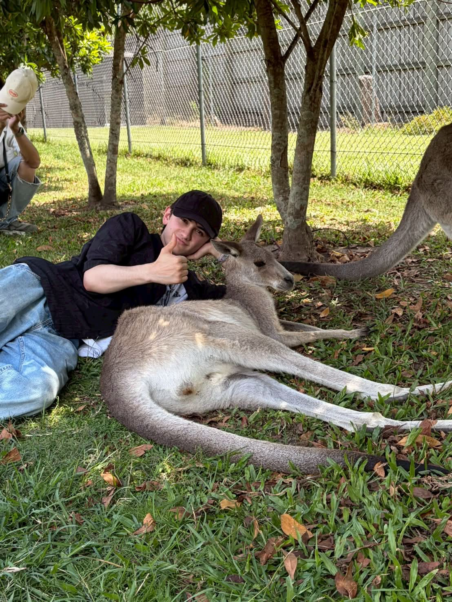

Yuki Watanabe
Portfolio
About
渡辺優貴
東京都市大学デザイン・データ科学部
デザインとデータの活用について学びながら、HTML・CSS・JavaScriptを使ったウェブ制作に取り組んでいます。
新しい体験に挑戦することが好きで、旅行やアウトドアなど、さまざまな活動を楽しんでいます。オーストラリアへの留学では、異なる文化や価値観に触れる経験をしました。
2025年3月から、ノジマで接客・販売のアルバイトを続けています。このサイトでは、学びや活動の記録を写真とともに紹介しています。